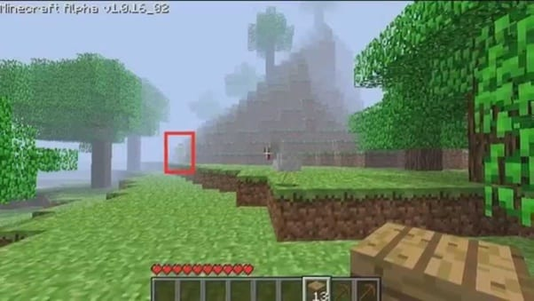

¿Qué es Herobrine?
¿Es él la gran calamidad predicha por el horror de los días de antaño, o es solo un cuento contado por los traviesos? Bueno, la historia es mucho más simple que eso. TL; DR – Herobrine es el creepypasta más popular que rodea a Minecraft. Sin embargo, si desea obtener más información, continuemos. Herobrine fue un creepypasta que se originó por primera vez alrededor de 2010. Lo básico de la historia es que alguien inició un mundo para un solo jugador, solo para notar a veces una figura parecida a Steve en la distancia, pero con los ojos lavados.
